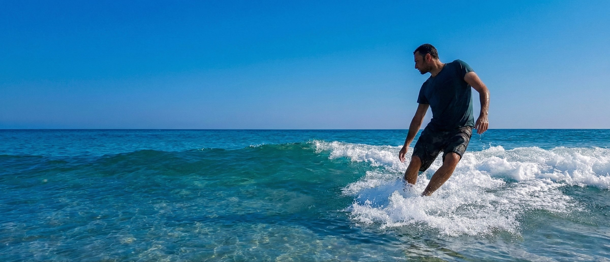

About me
I bridge the gap between functional design and user's delight. With a background in product design and a focus on user experience, I create digital products that feel intuitive yet distinctly human.
More about me
UX Designer & Tech Enthusiast
Digital
Craftsmanship
Selected work
Journal
Notes on design, technology and the craft in between.
Read the journal